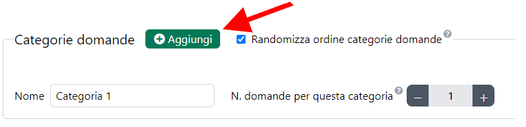

Creare una categoria di domande teoriche
- Entra nell'editor dell'esame a cui vuoi aggiungere una categoria di domande teoriche. Se nell'esame non c'è nessuna domanda, clicca il pulsante Aggiungi accanto a Domande.
- Per aggiungere una nuova categoria, clicca il pulsante Aggiungi accanto a Categorie Domande.

Ordine di visualizzazione delle categorie di domande teoriche
Durante un esame, vengono visualizzate tutte le domande relative ad una categoria prima di passare alla categoria successiva. Di default, l'ordine delle categorie è casuale. Se vuoi mostrare le categorie nello stesso ordine di inserimento, togli la spunta dal checkbox Randomizza ordine categorie domande.
Numero di domande visualizzate per una categoria
È possibile mostrare allo studente solo un sottoinsieme di domande della categoria. Per fare questo, inserisci il numero di domande che vuoi mostrare allo studente accanto a N. domande per questa categoria.
categoria_come_domanda_aggregata
Usare la categoria di domande teoriche come domanda aggregata
Con una domanda aggregata puoi raggruppare delle domande logicamente connesse e mostrare una introduzione allo studente. Per creare una domanda aggregata spunta la checkbox Usa come domanda aggregata e comparirà l'editor su cui puoi scrivere il testo introduttivo della domanda aggregata.

Ordine di visualizzazione delle domande di una categoria
Di default, l'ordine di visualizzazione delle domande da parte degli studenti di una categoria è casuale. Se vuoi mostrare le domande nell'ordine di inserzione, togli la spunta dal checkbox Randomizza.
Creare una categoria di esercizi di programmazione
- Entra nell'editor dell'esame a cui vuoi aggiungere una categoria di esercizi di programmazione. Se nell'esame non c'è nessun esercizio di programmazione, clicca il pulsante Aggiungi accanto a Esercizi di programmazione JS.

- Per aggiungere una nuova categoria, clicca il pulsante Aggiungi accanto a Categorie Esercizi di programmazione JS.
Ordine di visualizzazione delle categorie di esercizi di programmazione
Durante un esame, vengono visualizzate tutti gli esercizi Javascript relativi ad una categoria prima di passare alla categoria successiva. Di default, l'ordine delle categorie è casuale. Se vuoi mostrare le categorie nello stesso ordine di inserimento, togli la spunta dal checkbox Randomizza ordine categorie esercizi.
Numero di esercizi di programmazione visualizzati per una categoria
È possibile mostrare allo studente solo un sottoinsieme di esercizi della categoria. Per fare questo, inserisci il numero di esercizi che vuoi mostrare allo studente accanto a N. esercizi per questa categoria.
Ordine di visualizzazione degli esercizi di programmazione di una categoria
Di default, l'ordine di visualizzazione degli esercizi da parte degli studenti di una categoria è casuale. Se vuoi mostrare gli esercizi nell'ordine di inserzione, togli la spunta dal checkbox Randomizza.